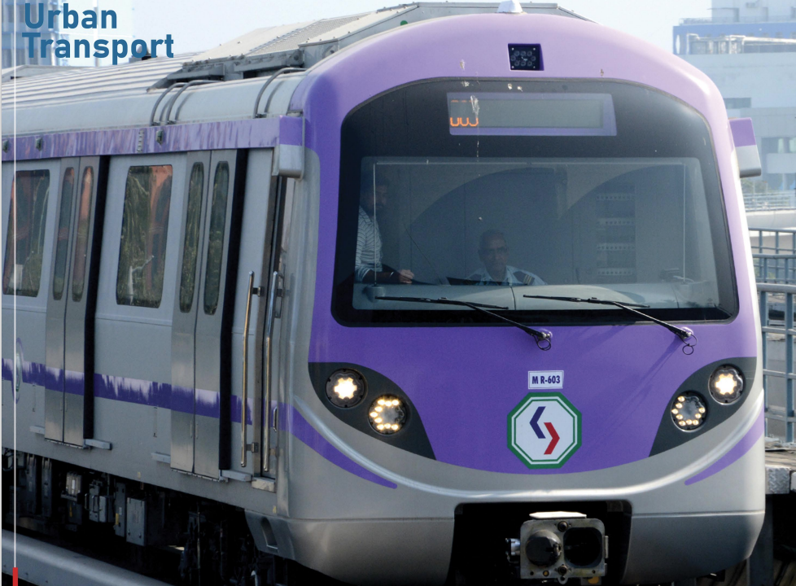

Kolkata Metro
The system operates using Automatic Train Operation (ATO/ATP) integrated with a CBTC-based train control system to ensure high-precision, reliable, and efficient service. Power is supplied through a 750 V DC third-rail current collection system, providing consistent and dependable energy for train operations.
Rail Gauge
1435mm
Car Body
Stainless Steel
Operating Speed
85 kmph, Design speed: 95 kmph


| Feature | Details |
|---|---|
| Train Formation | DMC–TC–MC–MC–TC–DMC (6 car Train set) |
| Passenger Capacity | 2068 passengers for 6 car train set |
| Current Collection | 750V DC Third Rail Current Collection |
| Bogies | Two axle Bolsterless type bogie with primary helical coil spring and secondary air suspension with wheel mounted disk brakes |
| Propulsion System | 3 Phase Propulsion system with Squirrel Cage type Induction motor, Variable Voltage and Variable Frequency(VVVF) control with regenerative braking |
| Brake System | Regenerative braking blended with pneumatic braking |
| Air-conditioning | Roof mounted Heating Ventilation and Air-conditioning system(HVAC) |
| Door System | Electrically driven externally sliding type |
| PA/PIS & CCTV System | Automatic Passenger Announcement system, Digital Route map on each door, Passenger saloon surveillance system |
| Saloon Lighting | LED based lighting system with Intelligent Light Control(ILC) resulting in energy saving |
| Interiors | Interiors with FRP panels, SS seats, floating floor with PVC floor covering |